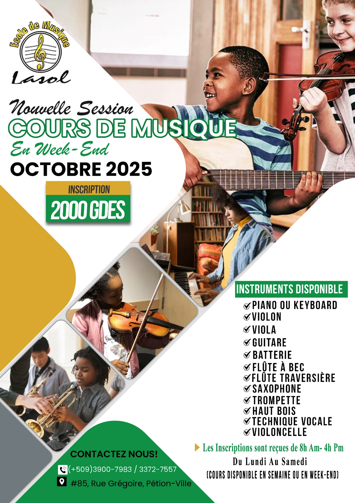
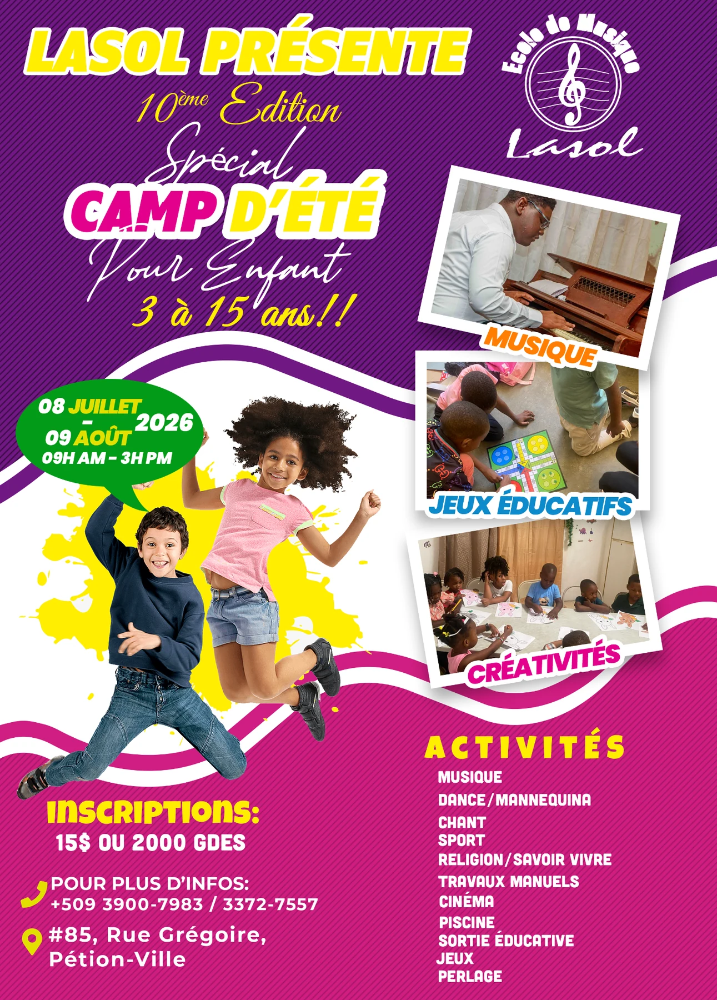
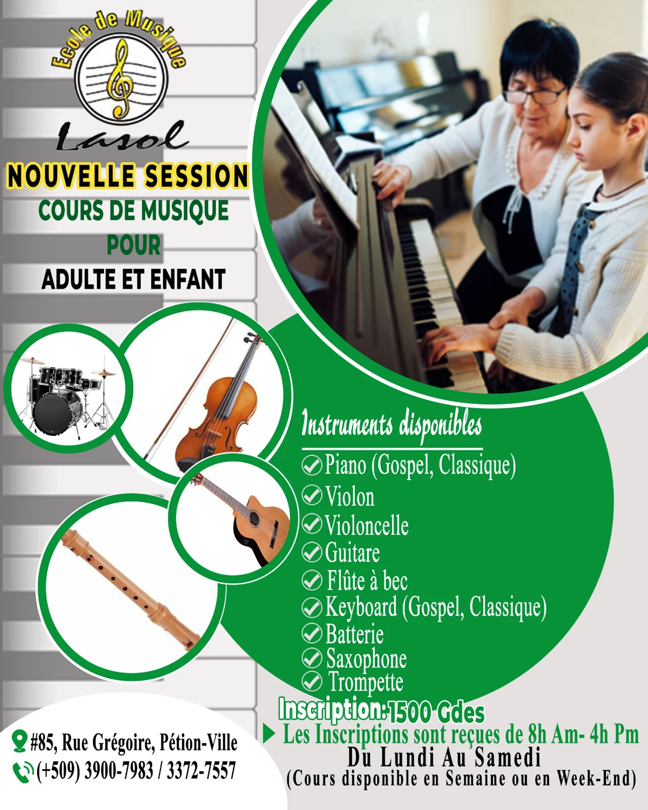

PROJET / AFFICHES DE FORMATION & LOISIRS
Lasol.
La musique,
en mouvement.
Trois affiches pour l’école de musique Lasol : les cours, la session d’octobre 2025 et le camp d’été 2026. Chaque composition met en images un programme et son public.
STRUCTUREÉcole de musique Lasol
MON RÔLEConception graphique
LES RÉALISATIONS
De la musique.
Des activités à découvrir.
Sélectionnez un visuel pour l’agrandir.

Des diagonales répartissent les images d’instruments et les informations. Le vert, le blanc et le jaune prolongent l’univers de l’école.

Une composition vive en violet, rose et jaune. Les photographies et les cadres inclinés donnent une place aux activités musicales, éducatives et créatives.

Cette première affiche présente les cours et les instruments. Les formes circulaires réunissent la scène au piano et les images de la batterie, du violon, de la guitare et de la flûte.